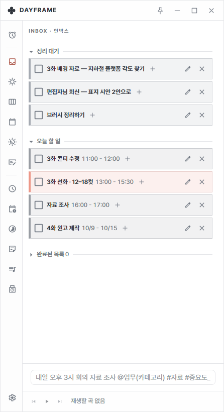
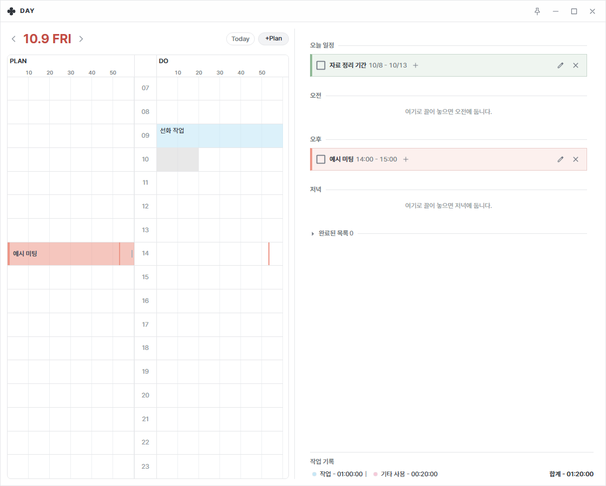

일간
계획(PLAN)과 실제 기록(DO)을 나란히 봅니다.
할 일을 시간대별로 배치하고 완료 목록을 확인합니다.
사용법
Dayframe 0.3.0의 사용법입니다.
Windows용 0.3.0 안내입니다. Mac용 0.3.0은 준비 중입니다.
‘알 수 없는 게시자’나 ‘PC를 보호했습니다’는 코드 서명이 없어 나타나는 안내입니다.
.dmg 받기 → 열기 → 앱을 응용 프로그램 폴더로 옮기기xattr -cr /Applications/Dayframe.app 실행하기새 버전이 나오면 앱이 안내합니다.
업데이트 전에 백업 파일을 저장하도록 권하며, 건너뛸 수도 있습니다.
순서는 적기 → 시간대 정하기 → 시간 배치입니다.
시간까지 못 정한 일은 시간대만 정해도 됩니다.
앱을 켜면 인박스가 열립니다.
아래 입력창에 떠오른 일을 적고 Enter를 누르면 ‘정리 대기’ 목록에 쌓입니다.
시간은 나중에 정해도 됩니다.
정리 대기에서 완료하면 인박스의 완료 목록에 모입니다.

일간을 열고 할 일을 오른쪽 오전·오후·저녁 칸에 끌어 놓습니다.
선택한 날짜와 시간대로 배치되며, 과거 날짜도 가능합니다.

병원이나 미팅처럼 시간이 정해진 일정만 일간 창의 왼쪽 PLAN 칸에 넣습니다.
상단의 +Plan 버튼으로도 추가할 수 있습니다.
오른쪽 DO 칸에는 실제로 한 작업 기록이 색으로 쌓입니다.
작업 기록은 설정 → 작업 기록에서 수집을 켠 뒤부터 모입니다.
왼쪽 레일에서 필요한 창을 엽니다.
트레이 아이콘을 우클릭해도 열 수 있습니다.
계획(PLAN)과 실제 기록(DO)을 나란히 봅니다.
할 일을 시간대별로 배치하고 완료 목록을 확인합니다.

한 주의 일정을 보고 날짜와 시간을 배치합니다.

한 달의 일정을 봅니다.
날짜를 선택하면 그날의 일정이 표시됩니다.


타이머 중심의 작은 창으로 전환합니다.
레일이나 트레이에서 켭니다.

글과 체크 목록을 기록하고 #태그로 골라 봅니다.

습관과 알림 시간을 등록하고 완료 여부를 체크합니다.
월~일 요일 버튼을 누르거나 드래그해 수행 요일을 선택합니다.
요일 변경은 오늘부터 적용되며 과거 기록은 유지됩니다.
쉬는 날에는 새 완료 체크와 알림이 실행되지 않습니다.

집중과 휴식을 번갈아 진행합니다.
시간과 횟수는 설정에서 정합니다.

날짜와 시간을 표시합니다.
기준일에서 남은 날짜나 지난 날짜를 확인합니다.

작업·기타 사용·휴식 시간을 직접 잽니다.
자동 작업 기록과는 별도 도구입니다.


자동 수집은 기본적으로 꺼져 있습니다.
아래 순서로 켜고 기록할 앱을 등록합니다.
등록한 앱이 활성일 때만 일간의 작업 기록에 남습니다.
자리비움 시간 동안 입력이 없으면 자리비움으로 기록하고 작업 분류 합계는 멈춥니다.
집중 안내 간격과 자동 기록 보관 기간도 이곳에서 정합니다.
Windows는 프로그램 이름, Mac은 앱 이름으로 분류합니다.
문서 본문·입력한 글·사이트 주소는 기록하지 않습니다.
자동 기록도 JSON 백업에 포함됩니다.

곡을 선택해 재생하고 셔플·반복을 설정합니다.
인터넷 연결이 필요합니다.
목록을 펼치고 재생목록 편집에서 곡 제목·순서를 바꾸거나 곡을 뺄 수 있습니다.
편집한 내용은 「편집 완료」를 눌러 확정합니다.
목록 삭제는 해당 목록을 삭제하므로 확인 내용을 읽고 진행하세요.
주소로 곡을 추가하거나 음악을 재생하려면 인터넷 연결이 필요합니다.
외부 서비스나 영상의 재생 제한에 따라 가져오기·재생이 실패할 수 있습니다.

설정 → 테마에서 색상 테마를 고릅니다.
기본·민트·피치·라벤더·버터 프리셋을 선택하거나 포인트색과 배경을 바꾸면 바로 적용됩니다.
배경은 색 또는 사진으로 정할 수 있습니다.
사진을 사용할 때는 사진 진하기와 흐림을 조절합니다.
글자·선·보조 색은 선택한 색에 맞춰 자동으로 계산됩니다.
바꾼 조합은 내 테마로 저장합니다.
기본 프리셋은 보존되며, 내 테마는 최대 5개까지 저장할 수 있습니다.
고급 설정에서 직접 바꾼 색은 자동으로 되돌릴 수 있습니다.
글자가 잘 읽히지 않는 색에는 대비 안내가 표시됩니다.
같은 탭 아래의 카테고리 설정에서는 일정에 사용하는 이름과 색을 관리합니다.

쓰고 있는 캘린더의 일정을 Dayframe 일정으로 가져옵니다.
가져오기 전용이라 Dayframe에서 고친 내용은 원래 캘린더로 전송되지 않습니다.
https://…/calendar.ics) 붙여 넣기 → 추가 또는 Enter.ics 파일 선택 → 가져오기Google 캘린더에서는 설정 → 해당 캘린더 → 캘린더 통합 → iCal 형식의 비공개 주소를 복사합니다.
비공개 주소는 다른 사람과 공유하지 마세요.
Google 공식 안내에서 주소 위치와 사용 방법을 확인할 수 있습니다.
https로 시작하고 별도 로그인 절차 없이 iCal 파일을 읽을 수 있어야 합니다.
기록은 내 PC에 저장됩니다.
인박스·일정·작품·메모·해빗·설정 등은 dayframe-state.json에, 활동 자동기록은 activity-records.json에 따로 저장됩니다.
설정 → 백업 → 저장 경로 복사에서 현재 앱의 실제 저장 경로를 복사할 수 있습니다.
%APPDATA%\Dayframe~/Library/Application Support/Dayframe베타는 별도의 Dayframe Beta 폴더를 사용합니다.
원본은 앱에서 작업할 때 갱신됩니다.
JSON 백업은 내보낸 시점의 사본이며 이후 변경은 자동으로 추가되지 않습니다.
이전 상태를 남기려면 그 시점에 백업을 저장하세요.
앱에서 내보낸 JSON에는 본문과 활동 자동기록이 함께 들어갑니다.
본문 파일 하나만 복사하는 것과 범위가 다릅니다.
0.3.0에서 사용한 자료는 0.2.9가 열지 못할 수 있습니다. 0.2.9로 다시 설치해도 자료 형식은 되돌아가지 않습니다. 업데이트 전에 0.2.9에서 저장한 백업을 사용하세요. 백업 복구는 현재 자료 전체를 교체하며 백업 이후에 변경한 내용은 포함되지 않습니다. 복구 전에 현재 자료도 따로 보관하세요.
자료 유지를 기본으로 안내합니다. 먼저 백업하기를 선택하면 제거를 취소하고 앱의 설정 → 백업 화면을 엽니다. JSON 내보내기를 저장한 뒤 앱을 완전히 종료하고 제거를 다시 실행하세요. 자료 삭제는 별도 선택과 재확인을 거칩니다. 자료 폴더 안에 둔 백업도 함께 삭제될 수 있으므로 백업은 다른 위치에 보관하세요.
JSON 불러오기는 현재 자료 전체를 교체합니다. 먼저 지금 자료를 JSON 내보내기로 백업하세요.
파일 선택이나 최종 확인을 취소하면 현재 자료는 유지됩니다.
잘못된 파일은 적용하지 않습니다.
더 새 앱에서 만든 백업은 이전 앱에서 열 수 없을 수 있습니다.
JSON 백업은 앱 폴더 전체 복제가 아닙니다.
창 위치와 독립창 배치는 별도 파일입니다.
사진·외부 첨부의 포함 범위는 확인 전까지 보장하지 않습니다.

인박스·일정·작품·메모·해빗·기록과 설정이 모두 삭제되고 되돌릴 수 없습니다.
반드시 먼저 JSON 내보내기로 백업하세요.
앱의 설정 화면에 버그 신고와 사용 후기 링크가 있습니다.